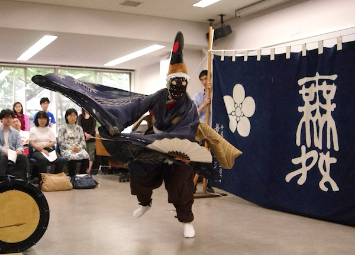
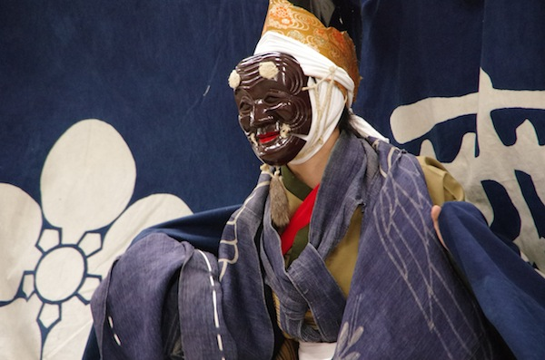

神楽部会
 神楽部会とは、神楽鑑賞や実践練習を行う部会です。
神楽部会では、神楽の稽古やその他伝統芸能の鑑賞をしています。
 当サークルで学んでいるのは、東北一帯に広がっている山伏神楽の中でも、岩手県の早池峰山麓を中心として受け継がれてきた神楽です。山伏神楽は、修験道の行者である山伏たちが伝承してきた神楽といわれ、巫女神楽や他の里神楽と比べ舞踊の要素が多く、2009年（平成21年）に世界無形遺産に登録された早池峰神楽（国重要無形民俗文化財）などが有名です。早池峰神楽の大償流の弟子筋にあたる、岩手県の鏑八幡神社に伝わる土沢神楽を合宿で教わりに行ったこともあります。
また自分たちで練習するだけでなく、神楽やその他伝統芸能の鑑賞も行っています。東京近郊で講演される神楽や能などの伝統芸能を鑑賞しに行きます。
活動状況
| 日程 | 週２回程度（水曜・隔週日曜、学期期間） |
| 参加人数 | ５名程度 |
| 活動場所 | 東京大学 駒場キャンパス, 都内スタジオ等 |
| 費用 | 有料施設で練習する場合の使用料など |
参加ご希望の方へ
神楽の練習だけでなく、神社や能楽堂などで行われる神楽の鑑賞に行ったり、神楽の鑑賞会を開いたりしています。「これも神楽の一種だ」と言い張って、コンテンポラリーダンスを観に行くこともあったり無かったり…。がっつり稽古して一芸を身につけたい人から、鑑賞するのが好きという人、地方に旅して民俗芸能を見てまわりたいという人まで、いろいろな人が神楽部会に参加しています。まずはイベント参加や稽古見学から、お気軽にお問い合わせください。入会・見学について のページもご覧ください。